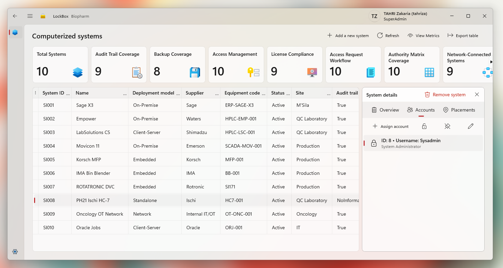

Why I Built LockBox
When Excel files start multiplying, it might be time to build something.

When I was working at Biopharm, I noticed that information about computerized systems was spread across Excel files, documents, emails, and probably a few places nobody remembered.
So I thought:
There has to be a better way.
That was the beginning of LockBox.
It is a small Windows application for centralizing system information, access management, network information, backups, users, and administrative accounts.
Because putting sensitive information into yet another Excel file did not feel like a great long-term strategy, I also added encryption and role-based access.
I built it with C#, WinUI 3, and MySQL.
It is not revolutionary software.
It is just one of those projects where you look at a daily problem and think:
Fine. I'll build a tool for this.
And sometimes, that is how software happens.